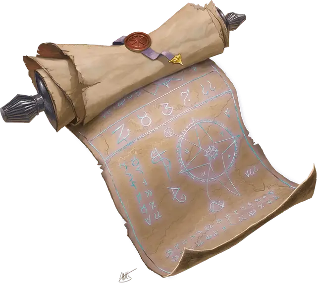

Свиток заклинания
Spell Scroll
Свиток, редкость варьируется (обычный, необычный, редкий, очень редкий, легендарный)

Свиток заклинания несёт на себе слова одного заклинания, написанные таинственным шифром. Если это заклинание есть в списке заклинаний вашего класса, вы можете прочитать свиток и наложить его заклинание, не предоставляя материальные компоненты. В противном случае свиток непонятен для вас. Накладывание заклинания свитком занимает столько же времени, сколько обычное накладывание заклинания. После того, как заклинание наложено, слова на свитке исчезают, а сам свиток рассыпается в прах. Если накладывание прервано, свиток остаётся целым.
Если заклинание есть в списке заклинаний вашего класса, но имеет более высокий уровень, чем те, что вы способны накладывать, вы должны совершить проверку базовой характеристики заклинаний, чтобы определить, удалось ли вам справиться с задачей. Сл такой проверки равна 10 + уровень заклинания. При провале заклинание просто исчезает со свитка, не произведя никаких эффектов.
Вариант: Неудачи при прочтении свитков
Существо, которое пытается, но не может наложить заклинание со свитка, провалив проверку базовой характеристики заклинаний, должно совершить спасбросок Интеллекта Сл 10. При провале бросьте к6 для определения последствий в соответствии с приведённой ниже таблицей.
| к6 | Результат |
| 1 | Волна магической энергии причиняет заклинателю урон силовым полем 1к6 за каждый уровень заклинания. |
| 2 | Вместо намеченной цели заклинание перенаправляется на заклинателя или на его союзника (определяется случайным образом). Если изначальной целью заклинания был сам заклинатель, то оно перенаправляется на случайное существо, находящееся поблизости. |
| 3 | Заклинание воздействует на случайную область в пределах действия заклинания. |
| 4 | Эффект заклинания оказывается прямо противоположен тому, каким он должен был быть. При этом заклинание не приносит ни вреда, ни пользы. Например, огненный шар [fireball] оборачивается безобидной волной холода. |
| 5 | Заклинатель страдает от незначительного, но причудливого эффекта, связанного с природой заклинания. Продолжительность этого эффекта такая же, как и длительность неудавшегося заклинания или же 1к10 минут для заклинаний с длительностью «мгновенная». Например, огненный шар [fireball] может обернуться тем, что из ушей заклинателя в течение 1к10 минут будет идти дым. |
| 6 | Заклинание активируется через 1к12 часов. Если целью заклинания был сам заклинатель, то оно срабатывает как обычно. Если целью было другое существо, которого уже нет рядом, то эффект от заклинания распространяется в направлении этого существа, на расстояние максимальной дистанции самого заклинания. |
Уровень заклинания на свитке определяет Сл спасброска от него, его бонус атаки, а также редкость этого свитка, как это показано в таблице «Свитки заклинаний».
свитки заклинаний
| Уровень заклинания | Редкость | Сл спасброска | Бонус атаки |
| Заговор | Обычная | 13 | +5 |
| 1 | Обычная | 13 | +5 |
| 2 | Необычная | 13 | +5 |
| 3 | Необычная | 15 | +7 |
| 4 | Редкая | 15 | +7 |
| 5 | Редкая | 17 | +9 |
| 6 | Очень редкая | 17 | +9 |
| 7 | Очень редкая | 18 | +10 |
| 8 | Очень редкая | 18 | +10 |
| 9 | Легендарная | 19 | +11 |
Если свиток содержит заклинание из списка заклинаний волшебника, то оно может быть скопировано в книгу заклинаний. Для этого надо преуспеть в проверке Интеллекта (Магия), Сл которой равна 10 + уровень заклинания. Если проверка успешна, заклинание удаётся скопировать. Вне зависимости от исхода проверки свиток после этого уничтожается.
Генератор свитков заклинаний.